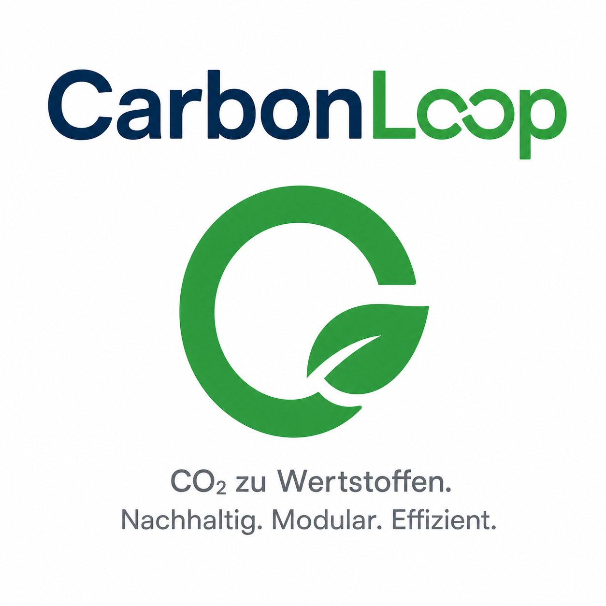

Bioverfahrenstechnik - Pitch
CarbonLoop
Aus Industrie-CO₂ werden Bioplastik, Proteine und Pigmente – direkt am Standort des Kunden.

Aus Industrie-CO₂ werden Bioplastik, Proteine und Pigmente – direkt am Standort des Kunden.
Industrieunternehmen stehen unter Druck, Emissionen zu reduzieren und steigende CO₂-Kosten sowie ESG-Anforderungen zu managen.
Gleichzeitig wächst die Nachfrage nach nachhaltigen Materialien wie Bioplastik, alternativen Proteinen und natürlichen Pigmenten.

30-, 100- und 400-m³-Module erlauben Pilotierung und spätere Skalierung am Standort.
Tageslicht wird priorisiert; LED schaltet sich nur sensorabhängig zu, um Stromkosten zu senken.
Ein Stamm erzeugt mehrere Wertströme: PHA, Proteine und Pigmente.
CarbonLoop steuert Licht, CO₂-Eintrag, Temperatur und Ernteintervalle digital.
Die abgezogene Biomasse wird separiert und weiterveredelt zu marktfähigen Produkten.
CO₂-Nutzung direkt am Industrieort reduziert Transport und erhöht den Kundennutzen.
Primäre Zielgruppe sind CO₂-intensive Standorte wie Zement, Chemie und Metallindustrie, die Emissionen reduzieren und ESG-Ziele erfüllen müssen.
Sekundäre Zielgruppen sind Kunststoffhersteller, Tierfutter-/Aquakultur-Unternehmen und Kosmetikhersteller für Pigmente.
Deckungsbeitrag mit Service: ca. 109.940 € pro Jahr.
Deckungsbeitrag mit Service: ca. 269.350 € pro Jahr.
Deckungsbeitrag mit Service: ca. 1.216.750 € pro Jahr.
1x mittlerer Reaktor. Fokus auf Pilotkunde, Referenz und Datensammlung. Ergebnis noch negativ.
2x mittlere Reaktoren. Wiederholbares Betriebsmodell, erste Serviceerlöse skalieren mit.
3x mittlere + 1x großer Reaktor. Ergebnis wird im schlanken Modell positiv.
4x mittlere + 2x große Reaktoren. Stark steigender Gewinn und robuste Skalierung.
Technische Validierung eines Referenzmoduls beim ersten Industriepartner.
100-m³-Standardmodul als wiederholbare Einheit für die ersten Standorte.
400-m³-Module für Standorte mit hohem CO₂-Strom und größerem wirtschaftlichen Hebel.
Mehrere Industriestandorte, zentrale oder regionale Bioraffinerie, wiederkehrende Erlöse.
CarbonLoop verbindet Dekarbonisierung, Bioproduktion und wiederkehrende Serviceerlöse in einem skalierbaren Standortmodell.